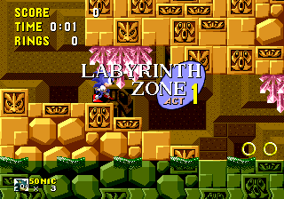

Sonic the Hedgehog - A passagem de tempo
 :::. Por Milles Prower
:::. Por Milles Prower
O jogo Sonic The Hedgehog
marcou o inicio de um dos
personagens mais queridos dos jogos eletrônicos. Na parte
técnica ao todo mostrava-se a frente dos jogos da época
(1991), e até
mesmo os subseqüentes. Um jogo que usava a formula que da certo:
bonito rápido e
simples.
Pois bem, uma curiosidade que vejo pouco comentada, é que este
jogo de criação de
Yuji Naka e sua equipe chamada Sonic Team, tem uma espécie de
passagem de tempo
na aventura de Sonic para salvar os animais do vilão
Dr.Robotinik. Cada fase por seu plano de fundo (background) mostrava
uma coloração diferente
como se informa-se o horário (manhã tarde e noite).
Abaixo estão listadas as
fases, vale ressaltar que os horários foram colocados por mim
sem base alguma
oficial na historia ou na produção do jogo.
Green Hill Zone - 09:00 AM - A aventura de Sonic inicia pela manhã na floresta contra Dr.Robotinik.
Marble Zone - 14:00 PM - Sonic, no inicio da tarde, chega às ruinas antigas da Marble Zone.
Spring Yard Zone - 18:00 PM - No final de tarde, Sonic entra em Spring Yard Zone, uma cidade que até lembra um pinball.
Labyrinth Zone - 22:00 PM -Sonic se esforça para ultrapassar um labirinto fechado e alagado durante a noite.

Star Light Zone - 02:00 AM- Na madrugada, Sonic entra na cidade iluminada pela luz das estrelas.
Scrap Brain Zone - 05:00 AM - No inicio do amanhecer, Sonic chega a fortaleza de Dr Robotinik.
Final Zone - 08:00 AM - A batalha final da aventura começa frente a frente entre Sonic e Robotinik.
Green Hill Zone - 09:00 - Sonic Vence Robotinik e o mesmo tenta escapar, mas Sonic o alcança e lhe da o golpe final agora e usa o poder das 6 Esmeraldas do Caos para arrumar tudo na Ilha.
Special Stage - 00:00 AM,PM - Nesta zona especial, onde residem as esmeraldas do caos, a passagem de tempo não existe.
Acesse o Trombone e comente sobre essa matéria!


construindo - construindo -construindo - construindo -construindo - construindo -construindo - construindo -construindo - construindo